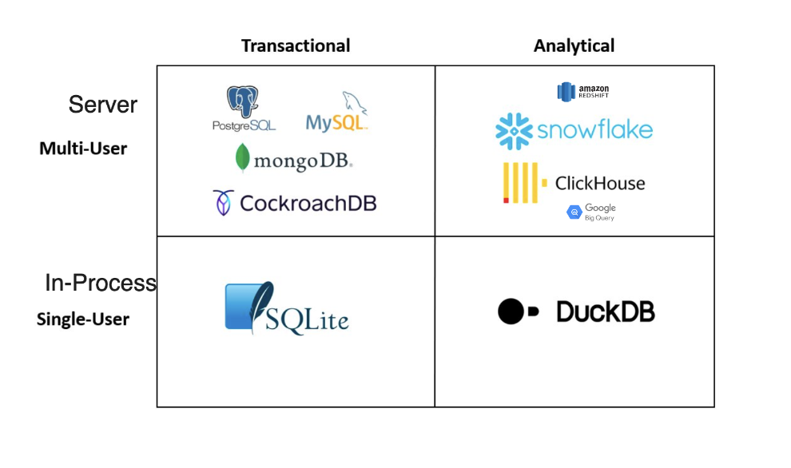
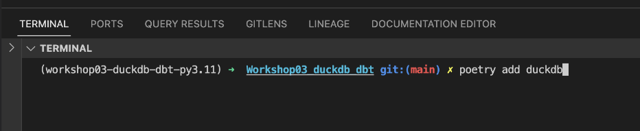
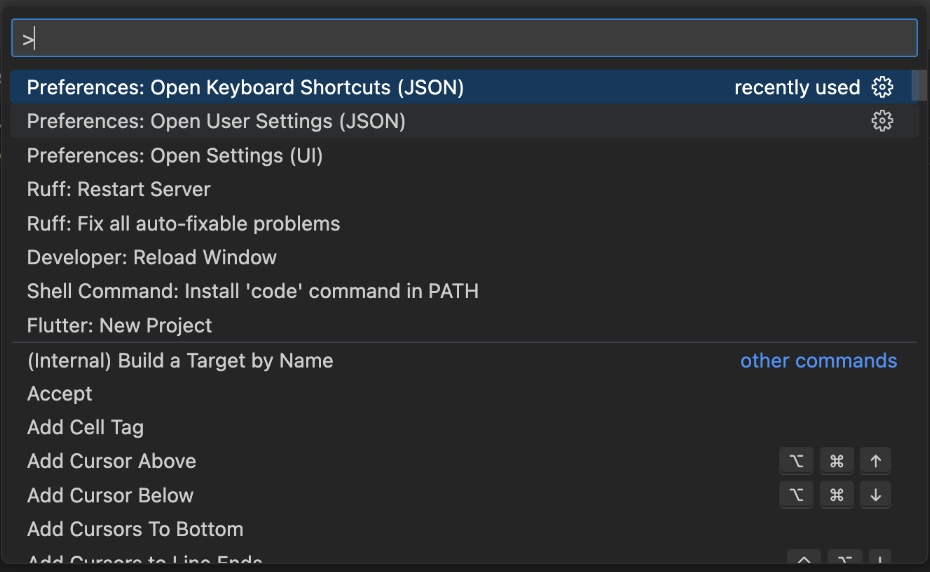
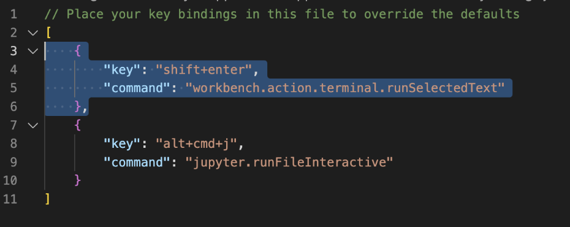
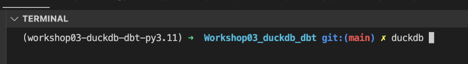
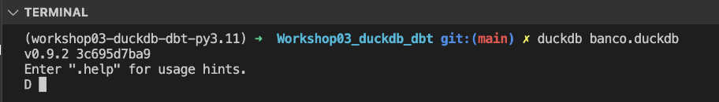

duckdb
Em nossa rotina temos que trabalhar muitas vezes consumindo; arquivos csv, parquet e outros formatos, e muitas vezes essa atividade não é tão simples, estão muitas vezes na AWS, Azure, etc.
O duckdb hoje é a forma mais eficiente para se trabalhar com:
- Múltiplos arquivos
- Quem é muito bom em SQL (compatibilidade de código)
- Quem gosta de Python, R ou Java
- Quem usa Pandas ou Polars
- Quem precisa de performance
- Quem quer aproveitar hardware local
- Utilizar um In process OLAP DBMS, Columnar database e com processamento vetorial

É o SQLite do Analytics
poetry add duckdb

Como utilizá-lo com o vscode?
Acessar o Open Keyboard Shortcuts (JSON)

Incluir esse atalha, dessa forma sempre que selecionarmos determinado texto e apertarmos shift+enter ele irá rodar esse código no terminal

Vamos brincar um pouco

- Fazer o Exercício 01
Vamos criar nossa primeira tabela /o/ Por ele rodar in-processo, ao sairmos do programa perdemos os dados
Exemplo: Persistindo os dados ao iniciar o CLI

Alguns pontos importantes sobre o formato duckdb
-
1 arquivo único (todas as tabelas ficam no mesmo arquivo)
-
Suporta update
- Armazenada no formato colunar